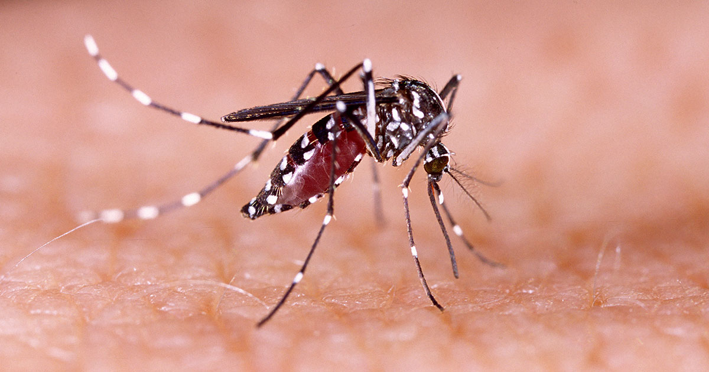
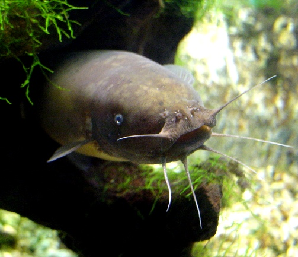
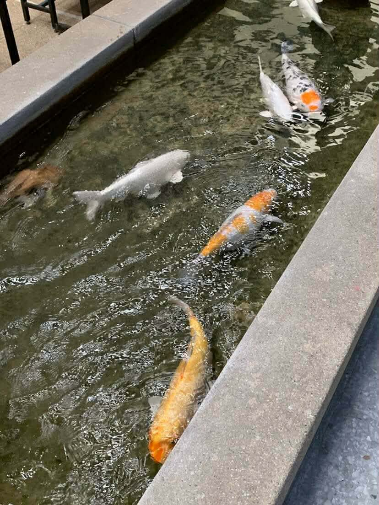

พบบ่อยที่: ทุกที่บริเวณใกล้แหล่งน้ำตอนกลางคืน
ยุงลาย (Aedes)

พบบ่อยที่: หอสมุด / คณะเกษตร
กระรอก (Squirrel)

พบบ่อยที่: บ่อน้ำกว้างๆ
ปลาดุก (Catfish)

พบบ่อยที่: ตึกเคมี
ปลาคราฟ์ (koi fish)

พบบ่อยที่: ป่า สถานที่ที่มีต้นไม้เยอะๆเช่น หลังตึก QS และ ตึกปราบไตรจักร
กิ้งก่า (chameleon)

พบบ่อยที่: ตึกทุกคณะ
นกพิราบ (pigeon)

พบบ่อยที่: บริเวณใกล้แหล่งน้ำ
ตัวเงินตัวทอง (Common Water Monitor)

พบบ่อยที่: ทุกคณะ
สุนัข (Dogs)
พบบ่อยที่: ทุกคณะ